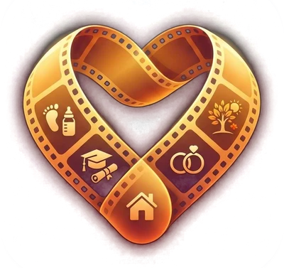

Who’s in this photo?
What’s happening in it? (goes into your movie prompt)
⏺ Listening… tap ⏹ when done.

Tell your life story — out loud or typed — and add your photos. Life Reel turns it into one master prompt you paste into an AI movie maker to build the movie of your life.
Answer questions about your life. Tap 🎤 and just talk — it keeps listening while you pause to think. Skip anything you want.
Add photos to any answer. Life Reel reads each photo’s date to work out how old you were and matches the look of that era.
Name the cast. Mom, Dad, your best friend, your partner — describe them and add their photos so they look right on screen.
Get your movie prompt. One tap copies a complete film brief — plus a kit with your photos — ready for an AI movie app.
Your story and photos stay on this device. There’s no account, and nothing is uploaded unless you copy or share it yourself. Use Back up my story in Settings to keep a copy safe.
Go in any order. The more you tell, the longer and richer your movie gets.
The language you speak when you tap the mic.
Everything lives on this device only. Save a backup file (answers + photos) to keep it safe or move it to another phone or computer.
Erase every answer and photo on this device. Save a backup first if you might want it back.